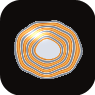

StackerImport 2–10 tripod photos. Stacker lines them up, takes the sharpest and cleanest-lit parts of each, and saves one full-resolution JPEG to Photos.
or choose what to fix
Everything runs on this device. Nothing is uploaded.
Or drop photos anywhere on this screen.
Tap a photo below, then paint over the spot where it should show. Pinch to zoom.
Each colour shows which photo that area came from.
JPEG, high quality (95), full colour detail, with the original camera details kept.
Merges tripod photos into one: sharp from front to back, with glare and reflections removed, in full resolution. Everything happens on this device — nothing is uploaded, and it works offline once opened.
This result will be discarded. Save it first if you want to keep it.
Stacker couldn’t start.